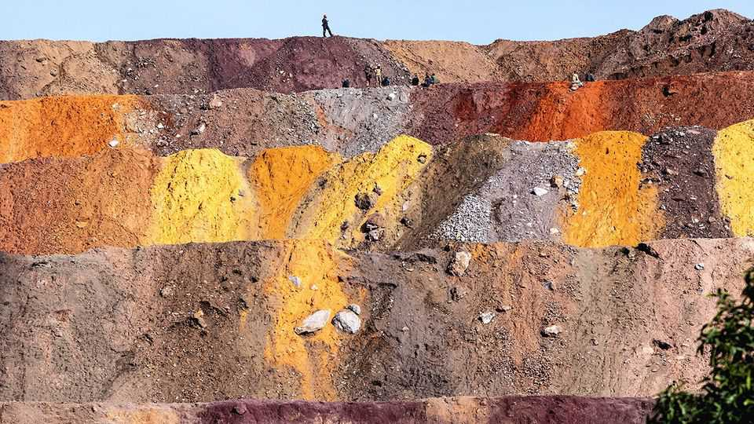
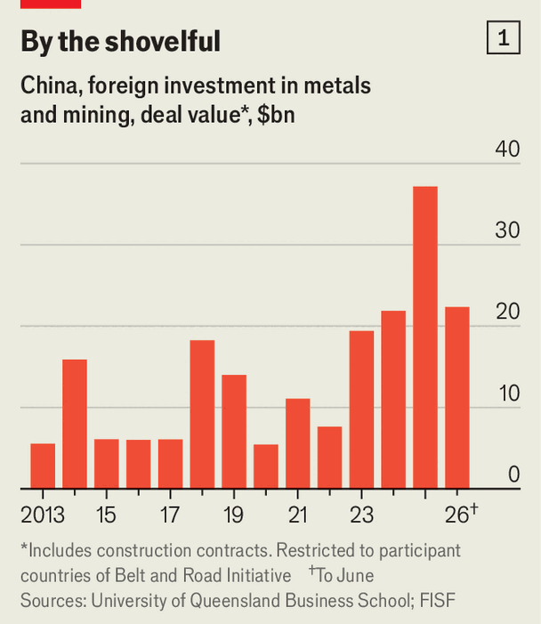
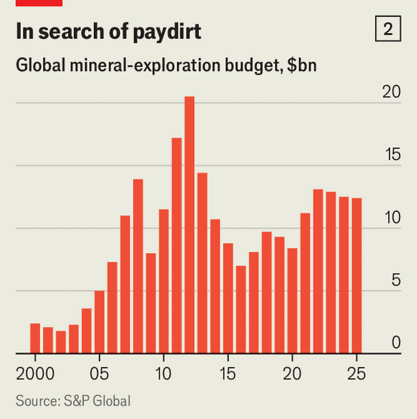

The countries making a fortune from the US-China rivalry
Critical-mineral profits could transform a lucky few

Oct 29th 2026
FOR BETTER or worse, many poor countries’ fortunes hinge on their natural resources. Since their industries are less sophisticated and their service sectors smaller than in rich places, an underground bounty can make a big difference to their economic prospects. Rising global demand for oil or ores can spur growth, attract investment and fill fiscal holes. Many finance ministers in the poor world fondly recall the last commodity “supercycle”, when rising China’s insatiable demand pushed up the price of metals and fossil fuels. Oil sales helped to nearly double Angola’s GDP between 2002 and 2008.
Now the world may be entering another supercycle, propelled by the race between America and China to secure supplies of minerals critical to artificial intelligence, electrification and other technologies expected to define the 21st century. Chinese minerals diplomacy, which has helped to secure deals with at least 19 countries since 2000, is alive and well. Donald Trump’s administration has already signed mineral-themed agreements with more than 20. Today the rivals are both courting a much smaller group of countries capable of getting minerals out of the ground quickly.
On October 16th the World Bank said it would quintuple, to $20bn, a fund to help countries capture some of the surging demand. Yet in order to succeed, their governments cannot rely only on their subterranean resources or their cosiness with America and China. They must also show ability to supply stuff at speed.
The urgency is palpable. In May 2025 Mr Trump was forced to rein in tariffs he had imposed on Chinese goods, after China retaliated by restricting exports of seven rare-earth minerals used to make semiconductors and weapons. America wants to break China’s chokehold. It has stockpiled minerals, offered producers guaranteed prices and poured billions into mining projects, while chivvying private investors to do the same. One Texan investor says administration officials approached him on eight separate occasions.

The wheedling has worked. According to officials, in 2025 the American government and American firms spent $15.4bn on foreign mines, up from nearly nothing in 2024, and more is expected this year. At least a tenth of that came from EXIM, a government-owned bank, and the Development Finance Corporation, a bank that once doled out loans to clinics and climate activists but has been repurposed by Mr Trump and given $205bn to play with. In response, Chinese state-owned mining giants splurged well over $30bn abroad, far more than in 2024 (see chart 1). The superpowers’ combined investments have not been this high since the last supercycle started to unwind a decade ago.
So far the biggest beneficiary has been the Democratic Republic of Congo (DRC). Most Western investors abandoned the vast, conflict-torn, landlocked central African country when prices of tin, diamonds and other of its abundant resources collapsed. This enabled Chinese firms to scoop up distressed assets for a song. The Chinese have pledged $1bn to expand a copper mine and propose to build a much bigger one that could churn out up to 500,000 tonnes per year, making it one of the largest copper projects in the world.
Now America is back, too. A government-financed fund is in talks to buy 40% of one of the last remaining Western-owned operating mines, a copper concern run by Glencore, a Swiss-based company. Private firms have followed. KoBold Metals, a Californian startup, is probing lithium deposits in the DRC’s Manono region. Virtus, an unlikely coalition of ex-spooks and soldiers, has bought a cobalt and copper venture with headquarters in Dubai.
The DRC is so indigent that the cash is already transforming its economy. In 2025 foreign mining investment was equivalent to roughly 8% of its GDP. It was more than double the total of foreign direct investment (FDI) the year before. The DFC has expressed interest in contributing up to $1bn to build the Dilolo-Sakania Railway, which will plug into a rail link to Angola and will be the DRC’s biggest infrastructure project in a decade. The Extractive Industries Transparency Initiative, a non-profit in Norway, reckons that mining will generate $8bn in government revenues between 2026 and 2030. Should other mines continue to produce at similar rates, the industry will yield $20bn for the state, roughly equivalent to a year’s spending.
Two other big winners are Brazil and Kazakhstan. Neither is so poor as to be materially enriched in an instant as the DRC has been. But they are nevertheless benefiting mightily from American and Chinese interest.
America’s approach has been the more focused. In Brazil it has set about building a rare-earth empire. In September USA Rare Earth, a listed company in which the government has a stake, took over Serra Verde, the only producer of four of the scarcest such minerals outside Asia. The firm has already spent $2.8bn acquiring the mine. A further package pulled together by the Department of War and a loan from the DFC will push American investment to nearly $5bn.
In Kazakhstan America is eyeing tungsten, which is vital to high-tech arms-manufacturing. In November 2025 Kaz Resources, a firm backed by the administration and by investors including Eric Trump and Donald Trump junior, two of the president’s sons, is stumping up $1bn to develop deposits at Kairakty, first explored in 1958, and Northern Katpar. The deal is equivalent to nearly a twentieth of Kazakhstan’s annual FDI inflow. A further $1.6bn could come via the DFC and EXIM.
China’s bets in both countries have been broader. Last year Chinese firms invested around $6bn in Brazil, more than in any other country. A third of that went on mines producing minerals including nickel, copper and gold. In Kazakhstan, China, like America, wants tungsten: Kaz Resources had to pay over the odds to fend off a Chinese firm lobbying for a licence, according to two American officials involved in negotiations. But last year China and Kazakhstan also agreed on deals worth over $10bn that included copper and gold projects, as well as a tungsten mine.
Last year Mr Trump’s officials spoke about recruiting countries to America’s camp while pressing them to spurn Chinese advances. Most, they said, would have to pick a side. The experience of the DRC, Brazil and Kazakhstan shows that this is not how things have played out so far.
American and Chinese mineral-hunters are piling into the same handful of countries because only so many have lots of half-finished, old or dormant mines that can be completed or revived quickly and cheaply. China has long prized speed, in contrast to the preference of private-sector Western miners for the slower process of finding promising new assets and carefully optimising returns over their lifetimes. Now America is becoming impatient—and so behaving more like the Chinese.
Last year just five countries—the DRC, Brazil and Kazakhstan, plus Zambia and Canada—accounted for nearly 80% of the two superpowers’ combined mining investments abroad. With the exception of Canada, for which Mr Trump seems to feel special contempt, Sino-American rivalry is paying off for these fortunate few. On a visit to Beijing in March, DRC officials obtained commitments from China to share more data and invest more in local processing. China has also agreed to share the ownership of its Congolese copper project with the local state-owned diamond miner. According to the two American officials, the Kazakh government managed to extract a bigger stake in the Kairakty joint venture than America first offered.
In the short run, smash-and-grab may benefit the superpower rivals, too. China started to produce lithium in the DRC earlier this year. America’s expansion of Serra Verde, the Brazilian mine, should be up and running in a year. The Kazakh project should begin production by 2030.

Yet the strategy has its limits. It relies on others to prospect for and develop existing deposits, even as prospectors and developers grow more cautious. Miners’ exploration budgets have never recovered from the end of the last supercycle (see chart 2). Despite forecasts of surging demand for copper, which may outstrip supply by 8% within ten years, the world’s biggest producer of the red metal, Chile, has cut back output, largely owing to underinvestment in decaying assets.
Higher prices should in theory attract investment in new projects. At least 30 countries possess viable deposits of copper, for instance. But these can take a decade or more to pinpoint and develop. In the meantime, all the meddling by the governments of America and China is confusing the price signals miners rely on to decide whether an untapped deposit is worth the hassle. The result is more investment paralysis—but, for the lucky few places with ready deposits, it’s payday. ■
Correction (October 29th 2026): We have amended the figure for the possible financing of Kaz Resources by the DFC and EXIM.